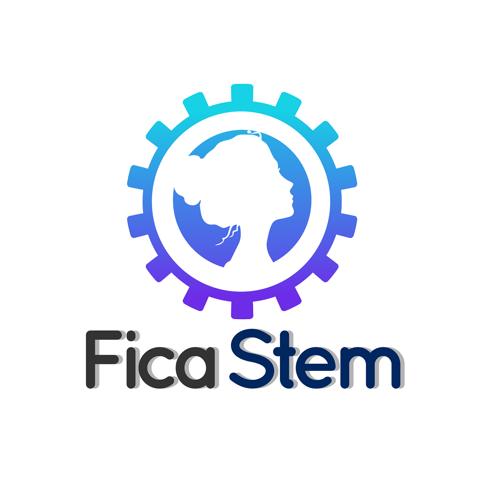

<ion-header class="ion-no-border">

  <ion-toolbar color="primary" class="toolb">
    <div id="header">

      

    </div>


    <ion-buttons  *ngIf="datos.id_rol==4" slot="start">
      <ion-back-button
        color="light"
        defaultHref="menu-opciones-se/menu-principal/home-secundaria"
      ></ion-back-button>
    </ion-buttons>
    <ion-buttons *ngIf="datos.id_rol==5" slot="start">
      <ion-back-button
        color="light"
        defaultHref="/menu-opciones/tabs/home-superior"
      ></ion-back-button>
    </ion-buttons>
  </ion-toolbar>
</ion-header>
<ion-content>

  <div class="fndtoolbar">
    <div class="horizontal">
      <p class="font-size-16" style="font-weight: 700">Me gusta, sigue y comparte</p>
    </div>
    <div class="horizontal">
      <div class="social-icons" (click)="socialMedia('FACEBOOK')">
        <ion-icon name="logo-facebook"></ion-icon>
      </div>
      <div class="social-icons" (click)="socialMedia('INSTAGRAM')">
        <ion-icon name="logo-instagram"></ion-icon>
      </div>


    </div>

    <br>
    <br>
    <div class="horizontal">
      <div class="social-icons" (click)="socialMedia('TWITTER')">
        <ion-icon name="logo-twitter"></ion-icon>
      </div>
      <div class="social-icons" (click)="socialMedia('PAGE')">
        <ion-icon name="globe"></ion-icon>
      </div>
    </div>
    <div class="horizontal">
      <p class="font-size-16" style="font-weight: 700">@FicaStem</p>
    </div>

  </div>


</ion-content>
<ion-footer class="ion-no-border">

 <div class="ficastemlogo">
  
 </div>
 <div class="wstemlogo">
  
</div>
</ion-footer>
